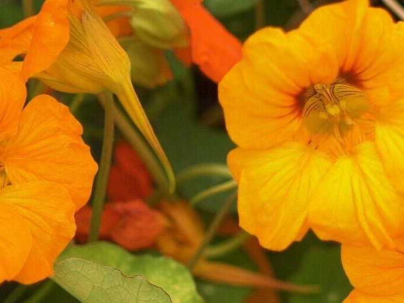
Zomerbloeiers & hangpotten
Geraniums, Fuchsia's, Verbena's, Surfinia's en volgroeide hangpotten uit eigen stek.
Vanaf medio aprilMeer info
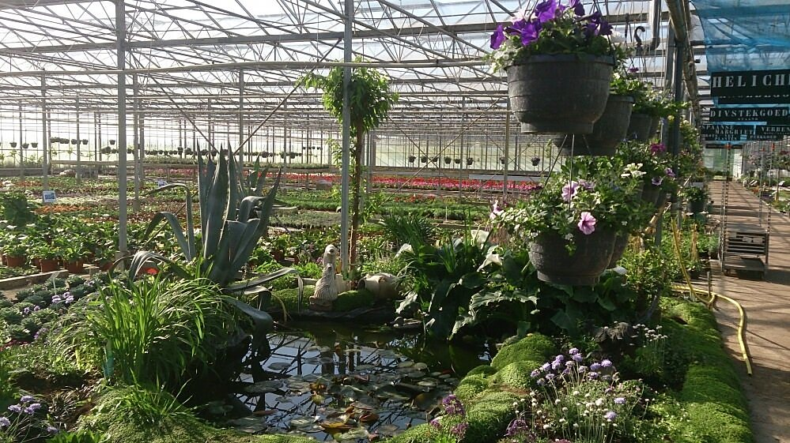
Zelf opgekweekte zomerbloeiers, vaste planten, hortensia's en siergrassen. Achter onze bescheiden ingang aan de Schuivenoordseweg vindt u meer dan u denkt. Kom gerust rondkijken, de koffie staat klaar.
Elk seizoen staan de verkoopbedden weer vol. Van de eerste violen in februari tot sierkolen en kalebassen in het najaar.

Geraniums, Fuchsia's, Verbena's, Surfinia's en volgroeide hangpotten uit eigen stek.
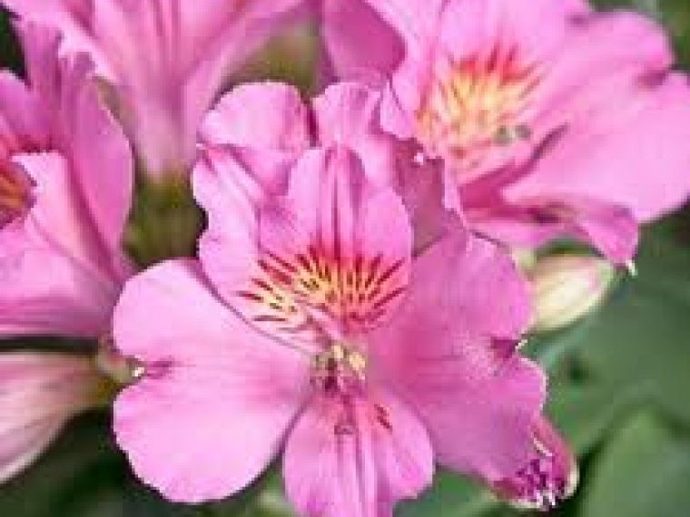
Van bodembedekkers tot Delphinium, Digitalis en Lupine. Plus onze eigen Salt Lake en Colorita.
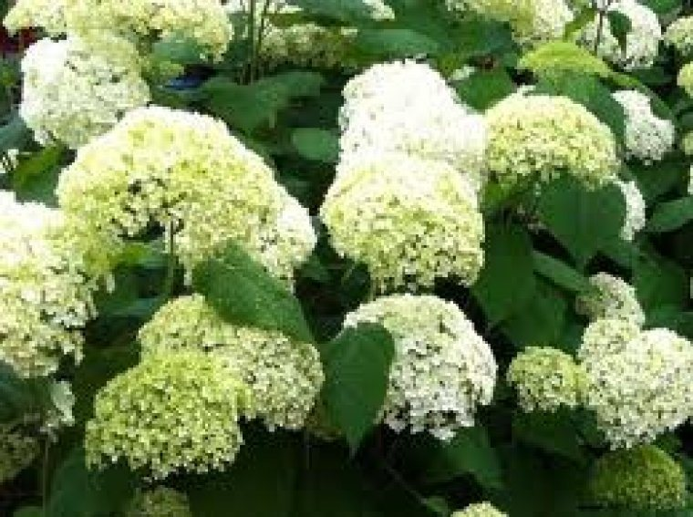
Eigen kweek in diverse kleuren en maten, van 'Annabelle' tot 'Blue Sky'.
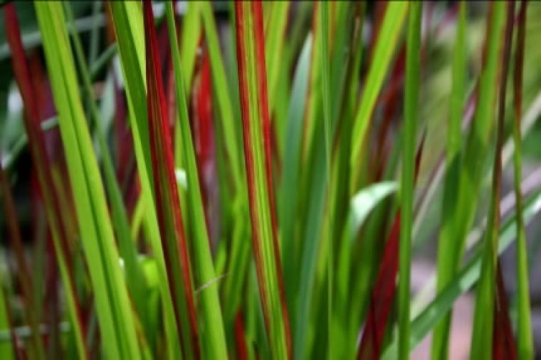
Decoratief, ijzersterk en makkelijk te onderhouden. In de border of in een pot op het terras.
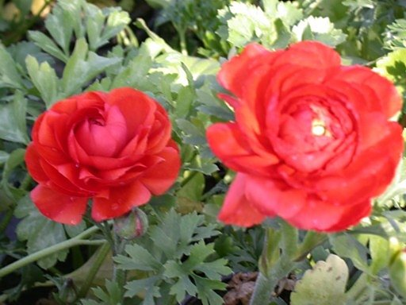
Violen, Primula's, Bellis, vergeet-mij-nietjes en Ranonkels in diverse kleuren.
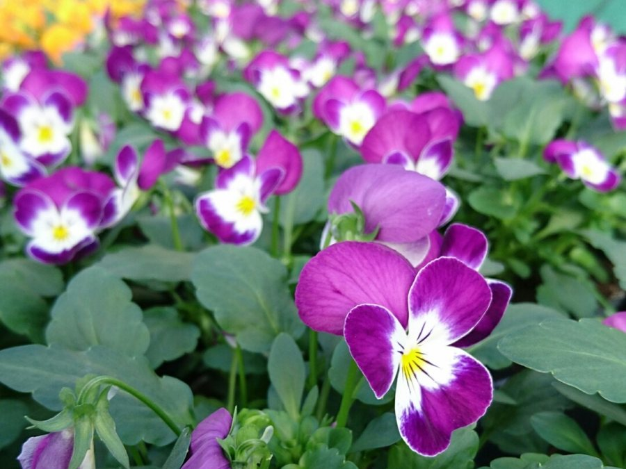
Winterharde violen, Asters, Heide, Hedera, sierkolen, kalebassen en bol-chrysanten.
Geglazuurde en terracotta potten, plantenbakken, rieten manden, (pot)grond en meststoffen haalt u ook bij ons. Al dan niet gevuld met zomerbloeiers. Online bestellen kan in onze eigen webshop.
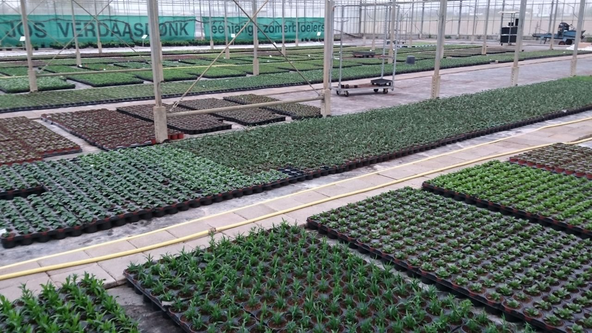
Van januari tot juni kweken we zo'n 450 tot 500 verschillende soorten en kleuren op. Daar begint het werk al ruim een half jaar eerder mee.
De borden wijzen u de weg naar uw favoriete zomerbloeiers of vaste planten.
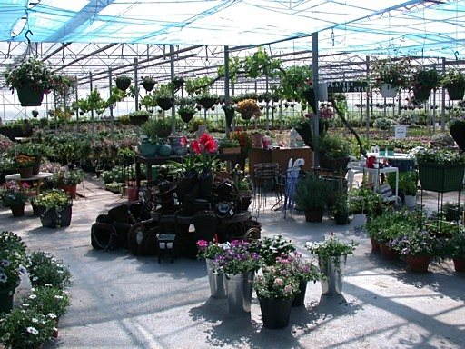
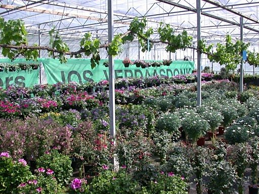
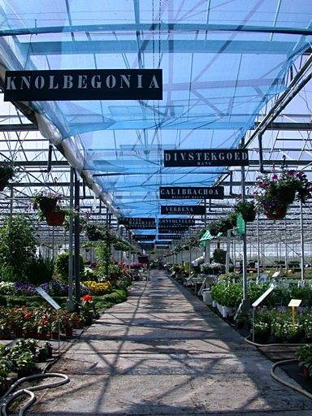
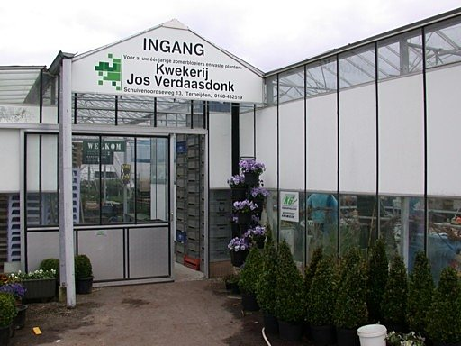
Na uw rondje langs de paden is het heerlijk genieten van een gratis kopje koffie of thee op ons terras.
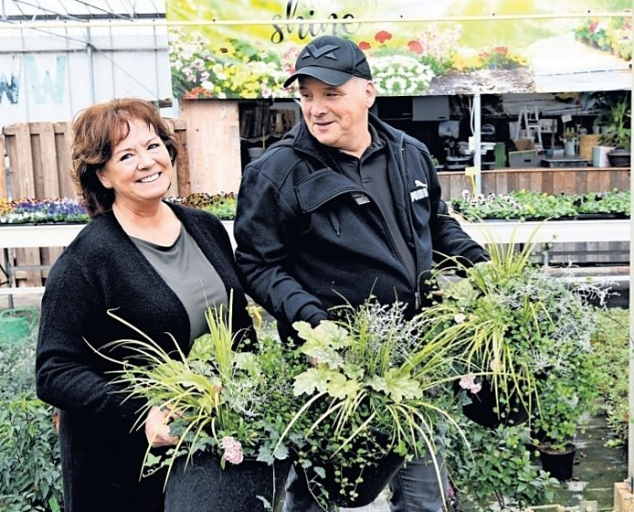
Jos en Ria Verdaasdonk begonnen ooit met aardbeien en tomaten, tot een bevriende collega hen aanraadde om perkgoed te gaan kweken. Daaruit groeide de kwekerij zoals u die nu kent.
Sinds 2013 runnen René en Garda Verdaasdonk de kwekerij, en sinds 2023 kunt u ook bij Koen Otto terecht met al uw vragen. Wat Jos het allerliefste deed, stekken, zaaien en bloemen verzorgen, zetten wij elke dag voort.
Op zoek naar een bepaalde plant of wilt u weten wat er nu staat? Bel even, stuur een bericht of kom gewoon rondkijken.
Najaarsseizoen vanaf 28 september 2026